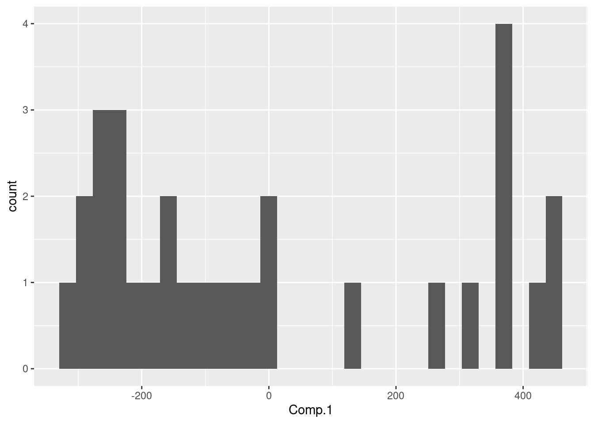
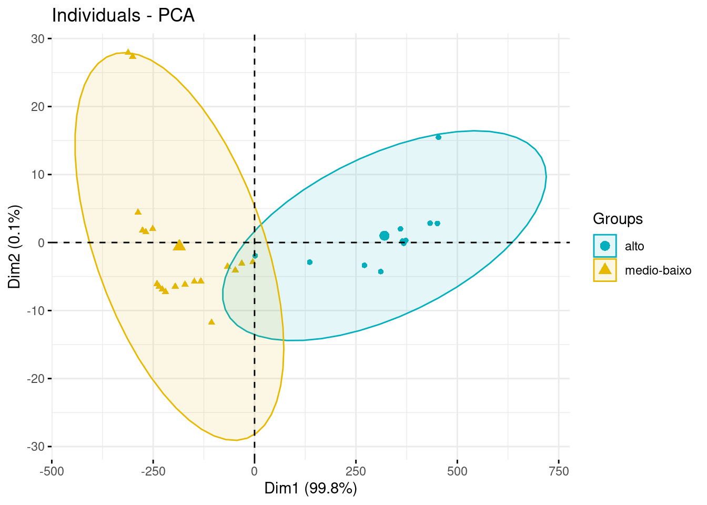
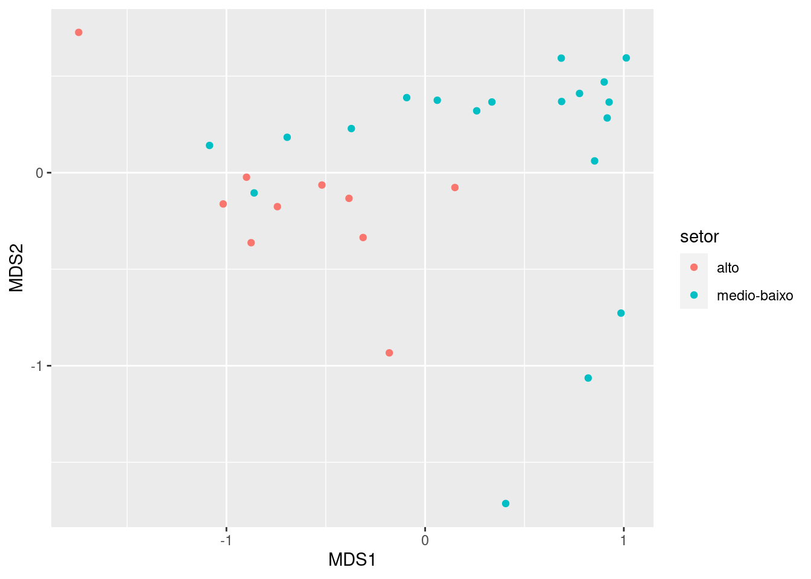

Slides
veja este exemplo simplificado
env_simp<-env[,2:4] # escolhi apenas três variáveis
princomp(env_simp)-> pca_env
summary(pca_env)## Importance of components:
## Comp.1 Comp.2 Comp.3
## Standard deviation 267.2654510 8.881811549 7.5185567870
## Proportion of Variance 0.9981078 0.001102288 0.0007898794
## Cumulative Proportion 0.9981078 0.999210121 1.0000000000Analisei os PCs e vi que o PC1 (Comp.1) concentra quase toda informação
library(tidyverse)
pca_env$scores %>%
as.tibble() %>%
ggplot(aes(Comp.1))+geom_histogram()## Warning: `as.tibble()` is deprecated as of tibble 2.0.0.
## Please use `as_tibble()` instead.
## The signature and semantics have changed, see `?as_tibble`.
## This warning is displayed once every 8 hours.
## Call `lifecycle::last_warnings()` to see where this warning was generated.## `stat_bin()` using `bins = 30`. Pick better value with `binwidth`.
Então, decidi dividr rio em duas porções uma com valores negativos do PC-1 e outr com os valores positiovs desse memso PC. Daí uso os valores do vetor do PC-1 para criar minha categoria de “setores do rio”.
pca_env$scores %>%
as.tibble() %>%
mutate(setor=ifelse(Comp.1<0,"medio-baixo", "alto"))-> env_set
library(factoextra)
fviz_pca_ind(pca_env,
geom.ind = "point", # show points only (nbut not "text")
col.ind = env_set$setor, # color by groups
palette = c("#00AFBB", "#E7B800"),
addEllipses = TRUE, # Concentration ellipses
legend.title = "Groups"
)
Agora o NMDS
nmds<-metaMDS(spe[-8,-c(20:30)]) # exclui algumas espécies spo para não dar de bandeja## Run 0 stress 0.08903991
## Run 1 stress 0.1338586
## Run 2 stress 0.0917883
## Run 3 stress 0.08903645
## ... New best solution
## ... Procrustes: rmse 0.0005722936 max resid 0.002735189
## ... Similar to previous best
## Run 4 stress 0.1283618
## Run 5 stress 0.1152777
## Run 6 stress 0.13356
## Run 7 stress 0.1167885
## Run 8 stress 0.1346745
## Run 9 stress 0.08903883
## ... Procrustes: rmse 0.0004230275 max resid 0.002021222
## ... Similar to previous best
## Run 10 stress 0.1278146
## Run 11 stress 0.1180087
## Run 12 stress 0.1151909
## Run 13 stress 0.1266444
## Run 14 stress 0.08903536
## ... New best solution
## ... Procrustes: rmse 0.001243055 max resid 0.005960615
## ... Similar to previous best
## Run 15 stress 0.1307569
## Run 16 stress 0.1295153
## Run 17 stress 0.1164649
## Run 18 stress 0.1168658
## Run 19 stress 0.1337775
## Run 20 stress 0.09178727
## *** Solution reachednmds$points## MDS1 MDS2
## 1 -1.74344522 0.72675569
## 2 -1.01632139 -0.16201264
## 3 -0.89891069 -0.02343724
## 4 -0.51940796 -0.06396089
## 5 0.14999400 -0.07684248
## 6 -0.38311083 -0.13301880
## 7 -0.74349076 -0.17593680
## 9 -0.18030953 -0.93328462
## 10 -0.31217615 -0.33586449
## 11 -0.87571611 -0.36273647
## 12 -0.86059986 -0.10491395
## 13 -1.08508123 0.14110163
## 14 -0.69438891 0.18341717
## 15 -0.37133763 0.22854632
## 16 -0.09265737 0.38878804
## 17 0.06120818 0.37521111
## 18 0.25957826 0.32039815
## 19 0.33611582 0.36615684
## 20 0.68682683 0.36864700
## 21 0.77709524 0.41038300
## 22 0.90116416 0.46974479
## 23 0.40551009 -1.71373204
## 24 0.82067114 -1.06360809
## 25 0.98586581 -0.72736937
## 26 0.85300001 0.06099331
## 27 0.91635353 0.28337579
## 28 0.92604916 0.36546887
## 29 0.68517013 0.59328684
## 30 1.01235129 0.59444335
## attr(,"centre")
## [1] TRUE
## attr(,"pc")
## [1] TRUE
## attr(,"halfchange")
## [1] TRUE
## attr(,"internalscaling")
## [1] 1.065662nmds_dat<-data.frame(nmds$points, env_set$setor[-8])
colnames(nmds_dat) <- c("MDS1","MDS2","setor")Vamos ao gráfico do NMDS
nmds_dat %>%
ggplot(aes(MDS1, MDS2, color=setor))+geom_point()